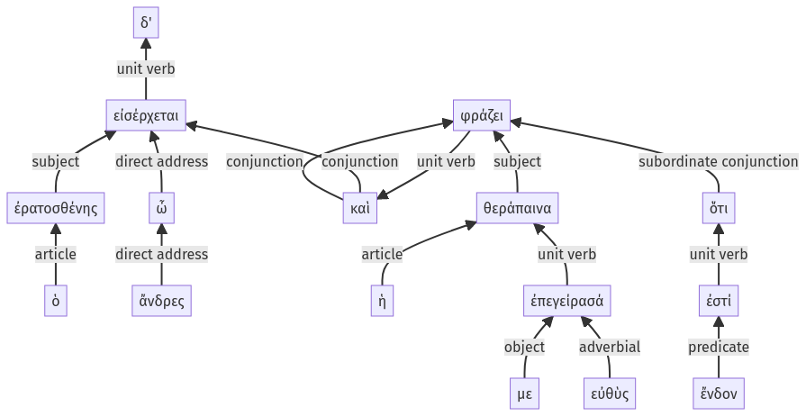

Lysias, Oration 1, 1.23.36-1.23.51a
1.23.24-1.23.35a | 1.23.52-1.23.76a
Sentence 65
1.23.36-1.23.51a
ὁ δ' ἐρατοσθένης, ὦ ἄνδρες, εἰσέρχεται, καὶ ἡ θεράπαινα ἐπεγείρασά με εὐθὺς φράζει ὅτι ἔνδον ἐστί.
1 ὁ ἐρατοσθένης ὦ ἄνδρες εἰσέρχεται
1 καὶ ἡ θεράπαινα
2 ἐπεγείρασά με εὐθὺς
1 φράζει
2 ὅτι ἔνδον ἐστί
ὁ δ' ἐρατοσθένης, ὦ ἄνδρες, εἰσέρχεται, καὶ ἡ θεράπαινα ἐπεγείρασά με εὐθὺς φράζει ὅτι ἔνδον ἐστί.
Highlighting:
- connecting words
- unit verb
- subject
- object
Color code:
- Independent clause (level 1, intransitive verb)
- Independent clause (level 1, intransitive verb)
- subordinate clause (level 2, linking verb)
- circumstantial participle (level 2, transitive verb)
